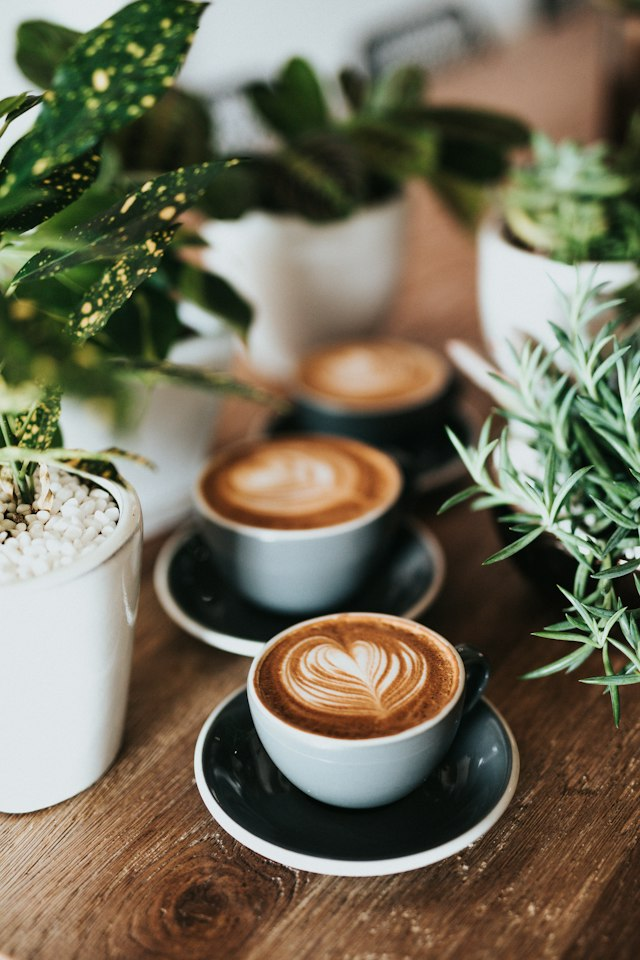
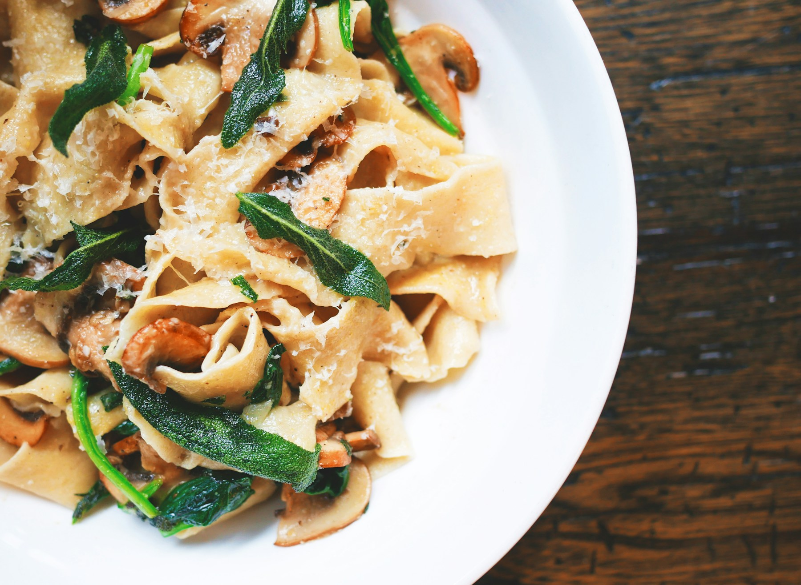
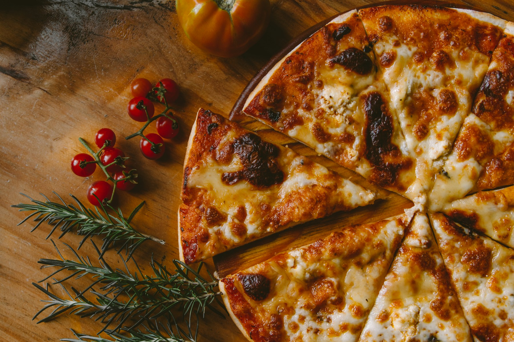

FOREVER CAFE & LOUNGE · ORMOC
A little coffee.
A little longer
together.
For the catch-ups that turn into dinner.
And the coffee breaks you wish would last.
YOUR NEXT COFFEE STOP
Come for a cup.
Stay for the company.
A coffee break, a meal with friends, or something sweet in the afternoon. Make a little room for it at Forever Cafe and Lounge, here in Ormoc City.
Choose from hot and iced coffee, matcha and blended drinks, then settle on pasta, pizza, rice meals or something to share.
Get to know Forever →deserve another cup.

Coffee & more
↗
Comfort on a plate
↗
Made for sharing
↗
MAKE TIME FOR FOREVER
Your plans can wait.
Your coffee is calling.
Start with a Spanish latte. Add a plate of carbonara. Or order pizza for the table and see where the conversation goes.
More than a coffee menu
From matcha to rice meals, there’s room for different cravings at one table.
A little closer to home
Find us at Chinatown Eastgate in Cogon, Ormoc. Staying in? Explore the delivery menu.
FOREVER CAFE & LOUNGE
What are you
in the mood for?
Coffee to start. Something good to follow.
No dishes found. Try another name or category.
A COFFEE STOP IN ORMOC
Make a little
time for Forever.
COFFEE. FOOD. COMPANY.
One table.
Plenty of possibilities.
Forever Cafe and Lounge brings coffee and comfort food together at Chinatown Eastgate, Brgy. Cogon, Ormoc City.
There’s hot coffee for slow mornings, iced drinks for warm afternoons, and pizza, pasta and sharing snacks when a quick catch-up becomes a meal.
Bring a friend, pick your usual, or find a new favorite. Your next coffee break can start here.
Discover the menu →CHINATOWN EASTGATE · ORMOC CITY
Your next coffee
break is here.
COME SAY HELLO
Find Forever.
Chinatown Eastgate, Brgy. Cogon
Ormoc City, Leyte, Philippines 6541
For today's hours, menu availability or a group visit, please contact the cafe directly.
Staying in?
Bring Forever over.
Explore drinks, meals and sharing snacks on Foodpanda. Delivery availability depends on your location.
Browse delivery menu ↗Keep up with the cafe
Find the latest updates and photos on our social pages.